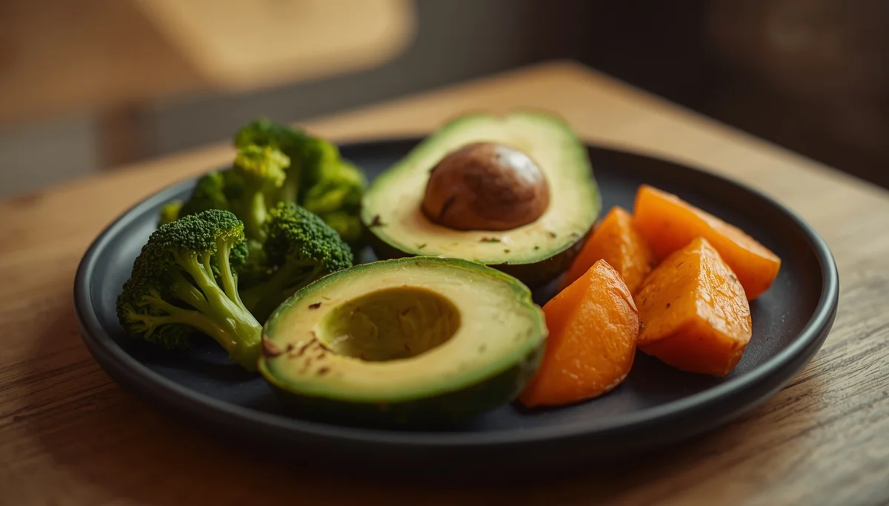

Alimentación Complementaria: Purés y BLW
Tercera parte: los signos biológicos de madurez a los seis meses, la transición nutricional y la comparativa práctica entre purés y el método Baby-Led Weaning.

Índice de esta Guía
Contenidos de la tercera parte:
1. El hito de los seis meses y los signos reales de madurez
Alrededor de los seis meses de vida se produce un cambio fisiológico trascendental. La leche materna o de fórmula deja de cubrir por sí sola todos los requerimientos nutricionales del lactante (especialmente las reservas de hierro y zinc almacenadas durante la gestación). Sin embargo, la fecha en el calendario no es el único factor: el inicio de la alimentación complementaria exige comprobar tres signos biológicos de madurez inequívocos:
- • Control postural: el bebé es capaz de mantenerse sentado en una sillita de comer con estabilidad y control absoluto de la cabeza y el tronco.
- • Pérdida del reflejo de extrusión: el mecanismo automático de defensa que empuja con la lengua hacia afuera cualquier elemento sólido introducido en la boca debe haber desaparecido.
- • Interés activo por la comida: el bebé observa los platos con atención, intenta coger los alimentos y muestra curiosidad genuina por llevarse cosas a la boca.
2. El papel de la leche: por qué es "complementaria"
Es fundamental comprender que durante el primer año de vida la leche (materna o de fórmula) sigue siendo el alimento principal y la base nutricional del bebé. Los nuevos alimentos que se introducen a partir de los seis meses se denominan "complementarios" porque su propósito inicial no es sustituir las tomas de leche, sino complementar el aporte energético, acostumbrar al sistema digestivo a nuevas texturas y sabores, y entrenar las habilidades motoras orales.
3. La opción de los purés y triturados suaves
El método tradicional de introducción mediante purés, cremas y triturados sigue siendo una opción excelente, muy extendida y segura. Permite controlar de forma precisa la cantidad de alimento que ingiere el bebé y asegurar una mezcla homogénea de nutrientes al principio del proceso. Conviene elaborarlos sin añadir sal ni azúcares añadidos, utilizando aceites de oliva virgen extra de calidad en crudo, y avanzando de forma progresiva desde texturas completamente lisas hasta texturas más espesas con pequeños grumos a medida que se acerca el final del primer año.
4. El método Baby-Led Weaning (BLW): ventajas y seguridad
El Baby-Led Weaning (alimentación guiada por el bebé) consiste en ofrecer al niño alimentos enteros presentados en formatos seguros (en forma de bastones grandes que pueda agarrar con el puño) para que sea él mismo quien explore, gestione y decida qué y cuánto comer basándose en su propia autoregulación de saciedad.
Ventajas clave del BLW: estimula el desarrollo de la psicomotricidad fina, favorece la coordinación oculo-manual, fomenta la autonomía temprana y ayuda a que el niño reconozca con naturalidad las texturas y sabores reales de cada alimento. Para practicarlo de forma segura, es obligatorio conocer las normas básicas de prevención de atragantamientos (cortar los alimentos de riesgo, evitar formas redondas enteras como uvas o frutos secos enteros, y mantener siempre una supervisión adulta estricta y sin distracciones).
5. Mitos frecuentes sobre la sal, el azúcar y las cantidades
En torno a la introducción de la comida surgen con frecuencia mitos arraigados que conviene desterrar:
- • La sal y el azúcar: deben evitarse de forma absoluta durante todo el primer año de vida. Los riñones del bebé aún son madurativos y no pueden procesar cargas elevadas de sodio, y el azúcar altera el desarrollo del paladar fomentando preferencias poco saludables a largo plazo.
- • El mito de las cantidades: "que coma todo el plato" no aplica en esta etapa. Habrá días que apenas pruebe bocado y otros que coma más; lo importante es respetar su saciedad y no forzar nunca la alimentación.
Nota importante: Independientemente de que elijas purés o BLW, ambos métodos son perfectamente compatibles y pueden combinarse según las necesidades de la familia y el ritmo del propio bebé.